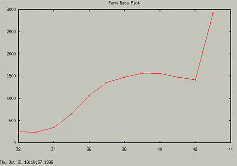

To add a title to your graph, use the set title "Title String"
command. For instance:
set title "Graph of Farm Data"
To turn the title off, just use set title with no arguments.
You can also display the time in the lower left hand corner by using
the set time command. To turn off this, use set notime.
Typing the following:
set time
set title "Farm Data Plot"
set nokey
plot
"farmstuff.dat"
produces the following:

Other Commands
There are other commands that may be useful in changing the appearence
of the graph. Use the help command to get more information.